efibootmgr -v
BootCurrent: 0005
Timeout: 0 seconds
BootOrder: 0005,0000,0001,0002,0003,0004
Boot0000* UiApp FvVol(7cb8bdc9-f8eb-4f34-aaea-3ee4af6516a1)/FvFile(462caa21-7614-4503-836e-8ab6f4662331)
Boot0001* UEFI VBOX CD-ROM VB0-01f003f6 PciRoot(0x0)/Pci(0x1,0x1)/Ata(0,0,0)N.....YM....R,Y.
Boot0002* UEFI VBOX CD-ROM VB2-01700376 PciRoot(0x0)/Pci(0x1,0x1)/Ata(1,0,0)N.....YM....R,Y.
Boot0003* UEFI VBOX HARDDISK VBf5cb0757-31383519 PciRoot(0x0)/Pci(0xd,0x0)/Sata(0,65535,0)N.....YM....R,Y.
Boot0004* EFI Internal Shell FvVol(7cb8bdc9-f8eb-4f34-aaea-3ee4af6516a1)/FvFile(7c04a583-9e3e-4f1c-ad65-e05268d0b4d1)
Boot0005* ubuntu HD(1,GPT,6dee24a7-4fe0-466f-b6f8-546e2048aceb,0x800,0x100000)/File(\EFI\ubuntu\shimx64.efi)我们已经学会制作BIOS启动的磁盘镜像和UEFI启动的磁盘镜像，但我们在使用ubuntu的时候不知道大家有没有注意过一下这个现象，在支持UEFI启动的虚拟机中使用efibootmgr命令查看ubuntu系统的启动顺序
通过这个命令我们知道efi会从 Boot0005 进行启动，默认的执行程序为 \EFI\ubuntu\shimx64.efi。那么 \EFI\ubuntu\shimx64.efi 是何物？如果想知道shimx64.efi文件是什么，可以参考后续文章。这个章节我们不会介绍这个内容，留在后续章节介绍，在这个章节我们将学习如何使用shim制作一个可以支持BIOS启动，也支持UEFI方式启动，同时也支持安全启动的磁盘镜像。
这里不会介绍grub的编译，我们这里直接使用《Grub2那些事 - 制作一个使用UEFI的系统》中编译说产生的文件。这里我们假设工作目录为bios-uefi
$ WORKSPACE=/opt/workspace/
$ mkdir -p bios-uefi
$ cd $WORKSPACE/bios-uefi制作秘钥文件
这里我们将创建OVMF安全启动所使用的DB，KEY，PK秘钥。使用以下脚本创建
#!/bin/bash
# Copyright (c) 2015 by Roderick W. Smith
# Licensed under the terms of the GPL v3
echo -n "Enter a Common Name to embed in the keys: "
read NAME
for n in PK KEK db
do
openssl genrsa -out "$n.key" 2048
openssl req -new -x509 -sha256 -subj "/CN=$NAME/" -key "$n.key" -out "$n.pem" -days 7300
openssl x509 -in "$n.pem" -inform PEM -out "$n.der" -outform DER
done
GUID=`python3 -c 'import uuid; print(str(uuid.uuid1()))'`
echo $GUID > myGUID.txt
for n in PK KEK db
do
sbsiglist --owner "$GUID" --type x509 --output "$n.esl" "$n.der"
done
for n in PK=PK KEK=PK db=KEK
do
sbvarsign --key "${n#*=}.key" --cert "${n#*=}.pem" --output "${n%=*}.auth" "${n%=*}" "${n%=*}.esl"
done
chmod 0600 *.key
echo ""
echo ""
echo "For use with KeyTool, copy the *.auth and *.esl files to a FAT USB"
echo "flash drive or to your EFI System Partition (ESP)."
echo "For use with most UEFIs' built-in key managers, copy the *.cer files;"
echo "but some UEFIs require the *.auth files."
echo ""将这个文件命名为mykeys.sh。
$ chmod +x mykeys.sh然后执行这个命令
$ mkdir -p keys
$ cd keys
$ ./mykeys.sh
Enter a Common Name to embed in the keys: Foo, Inc. Secure Boot key set
Generating RSA private key, 2048 bit long modulus (2 primes)
..................+++++
.......................................................................................+++++
e is 65537 (0x010001)
Generating RSA private key, 2048 bit long modulus (2 primes)
........+++++
.......................+++++
e is 65537 (0x010001)
Generating RSA private key, 2048 bit long modulus (2 primes)
.....................................................................................................+++++
......................+++++
e is 65537 (0x010001)
For use with KeyTool, copy the *.auth and *.esl files to a FAT USB
flash drive or to your EFI System Partition (ESP).
For use with most UEFIs' built-in key managers, copy the *.cer files;
but some UEFIs require the *.auth files.这些秘钥主要为OVMF所使用，我们还需要创建一个用于shim使用的秘钥
openssl genrsa -out "shim.key" 2048
openssl req -new -x509 -sha256 -subj "/CN=shim/" -key "shim.key" -out "shim.pem" -days 7300
openssl x509 -in "shim.pem" -inform PEM -out "shim.der" -outform DER这样我们获得了PK，DB，KEK和SHIM秘钥。这些秘钥是后续安全启动所必不可少的。
SHIM编译
这个章节介绍一个新的组件编译即SHIM
$ cd $WORKSPACE
$ git clone https://github.com/rhboot/shim.git
$ make update
$ sudo make EFI_PATH=/usr/lib VENDOR_CERT_FILE=$WORKSPACE/bios-uefi/keys/shim.der ENABLE_SBSIGN=1 ENABLE_SHIM_CERT=1 install-as-data
...
Signing Unsigned original image
install -d -m 0755 //usr/share//shim/15.4/x64/
install -m 0644 shimx64.efi //usr/share//shim/15.4/x64//
install -m 0644 BOOTX64.CSV //usr/share//shim/15.4/x64//
install -m 0644 mmx64.efi.signed //usr/share//shim/15.4/x64//mmx64.efi
install -m 0644 fbx64.efi.signed //usr/share//shim/15.4/x64//fbx64.efi这样我们获得了已经签发好的shimx64.efi，mmx64.efi和fbx64.efi，这些文件存放在//usr/share//shim/15.4/x64//目录中
创建磁盘镜像
这里为了方面，我们直接使用以下命令创建相关的磁盘镜像和分区
$ truncate --size 20G bios-uefi.img
# 创建磁盘分区
$ sgdisk --clear \
--new 1::+1M --typecode=1:ef02 --change-name=1:'BIOS boot partition' \
--new 2::+100M --typecode=2:ef00 --change-name=2:'EFI System' \
--new 3::-0 --typecode=3:8300 --change-name=3:'Linux root filesystem' \
bios-uefi.img
Creating new GPT entries in memory.
Setting name!
partNum is 0
Setting name!
partNum is 1
Setting name!
partNum is 2
Warning: The kernel is still using the old partition table.
The new table will be used at the next reboot or after you
run partprobe(8) or kpartx(8)
The operation has completed successfully.使用sgdisk命令创建了3个分区，这里需要重点关注的是各种typecode，每一种typecode表示不同的分区类型
-
第一个分区用于BIOS
-
第二个分区用于EFI系统分区
-
第三个分区作为根文件系统
使用gdisk查看分区的详细信息
$ gdisk -l bios-uefi.img
GPT fdisk (gdisk) version 1.0.5
Partition table scan:
MBR: protective
BSD: not present
APM: not present
GPT: present
Found valid GPT with protective MBR; using GPT.
Disk bios-uefi.img: 41943040 sectors, 20.0 GiB
Sector size (logical): 512 bytes
Disk identifier (GUID): 812C7F89-1AFC-4E66-9923-73378996DF32
Partition table holds up to 128 entries
Main partition table begins at sector 2 and ends at sector 33
First usable sector is 34, last usable sector is 41943006
Partitions will be aligned on 2048-sector boundaries
Total free space is 2014 sectors (1007.0 KiB)
Number Start (sector) End (sector) Size Code Name
1 2048 4095 1024.0 KiB EF02 BIOS boot partition
2 4096 208895 100.0 MiB EF00 EFI System
3 208896 41943006 19.9 GiB 8300 Linux root filesystem做好分区后，我们将相关的分区进行格式化
# 使用回环设备
$ LOOPDEV=$(losetup --find --show bios-uefi.img)
$ sudo partprobe ${LOOPDEV}
# 创建文件系统
$ sudo mkfs.fat -F32 ${LOOPDEV}p2
$ sudo mkfs.ext4 -F -L "root" ${LOOPDEV}p3 # 这里我们使用了root作为标签
mke2fs 1.45.5 (07-Jan-2020)
Discarding device blocks: done
Creating filesystem with 5216763 4k blocks and 1305600 inodes
Filesystem UUID: 197e687e-b9b1-4d5b-8ff2-87e635d08801
Superblock backups stored on blocks:
32768, 98304, 163840, 229376, 294912, 819200, 884736, 1605632, 2654208,
4096000
Allocating group tables: done
Writing inode tables: done
Creating journal (32768 blocks): done
Writing superblocks and filesystem accounting information: done使用以上步骤，格式化EFI系统分区和root文件系统分区。
首先将rootfs.tar解压到系统的第三个分区中，将第三个分区作为根文件系统
$ MOUNTDIR=$(mktemp -d -t workXXXXXX)
$ mount ${LOOPDEV}p3 $MOUNTDIR
$ sudo tar -C $MOUNTDIR -xf $WORKSPACE/buildroot/output/images/rootfs.tar安装支持BIOS启动
我们使用以下命令将grub安装到磁盘的第一个扇区，注意的是在GPT系统分区的磁盘中，第一个扇区叫做PMBR。由于其前446个字节没有使用，我们这里完全可以将GRUB安装到这个位置。
$ sudo /opt/workspace/grub-bios/sbin/grub-install --boot-directory=/mnt/boot --modules="part_msdos" ${LOOPDEV}安装好后，我们做一下清理工作
$ sudo umount $MOUNTDIR到这里，我们将获得一个支持bios启动的系统盘，由于还没有把内核镜像放进去，所以还不能正常启动
$ qemu-system-x86_64 -m 512 -drive file=./bios-uefi.img,format=raw -m 512系统将正常启动。
安装支持安全启动的UEFI
下面我们将安装支持UEFI安全启动的系统盘，我们希望无论打开安全启动或者没有打开系统都能够正常启动。让我们开始我们的工作吧。
创建EFI的基本目录结构，并且将shim相关的文件拷贝到当前目录中
$ MOUNTDIR=$(mktemp -d -t workXXXXXX)
# 加载系统的第二个EFI系统分区
$ mount ${LOOPDEV}p2 $MOUNTDIR
$ mkdir -p EFI/BOOT
$ mkdir -p EFI/test
$ cp //usr/share//shim/15.4/x64//* .然后，使用shim秘钥对shimx64.efi程序进行签发
$ sbsign --key keys/db.key --cert keys/db.pem --output shimx64.efi.signed shimx64.efi
warning: data remaining[804864 vs 930262]: gaps between PE/COFF sections?
warning: data remaining[804864 vs 930264]: gaps between PE/COFF sections?
Signing Unsigned original image签发grub镜像，对于比较新的Grub版本，这里需要注意的是这里需要提供一个sbat文件
$ cat <<SBATCFG > sbat.csv
sbat,1,SBAT Version,sbat,1,https://github.com/rhboot/shim/blob/main/SBAT.md
shim,1,UEFI shim,shim,1,https://github.com/rhboot/shim
SBATCFG
$ $WORKSPACE/grub-efi/bin/grub-mkimage \
-d /usr/lib/grub/x86_64-efi \
-o ./grubx64.efi \
-p /EFI/test \
--sbat sbat.csv \
-O x86_64-efi \
fat iso9660 part_gpt part_msdos normal boot linux configfile loopback chain efifwsetup efi_gop \
efi_uga ls search search_label search_fs_uuid search_fs_file gfxterm gfxterm_background \
gfxterm_menu test all_video loadenv exfat ext2 ntfs btrfs hfsplus udf
$ sbsign --key keys/shim.key --cert keys/shim.pem --output grubx64.efi.signed grubx64.efi
Signing Unsigned original image我们这里使用了grub-mkimage命令创建grubx64.efi程序，这里需要注意几个选项
-
-O 指示目标架构
-
-p 告诉创建目录的前缀，这里我们使用了一个叫做test的测试系统，所以这里指定的目录为/EFI/test，你也可以指定其他目录
-
--sbat sbat文件，在下一个章节我们将详细的介绍这个文件
此时，我们使用DB秘钥签发了SHIM，使用shim秘钥签发了grub。在Ubuntu发行版本中一般通过微软进行签发SHIM，使用Canonical签发其他文件。
接着，我们将制作一个支持安全启动的OVMF固件，这里我们使用了在《Grub2那些事 - 制作一个使用UEFI的系统》制作的OVMF程序。
$ cp $WORKSPACE/tianocore/edk2/Build/OvmfX64/DEBUG_GCC5/FV/OVMF_CODE.fd \
$WORKSPACE/tianocore/edk2/Build/OvmfX64/DEBUG_GCC5/FV/OVMF_VARS.fd \
$WORKSPACE/tianocore/edk2/Build/OvmfX64/DEBUG_GCC5/FV/OVMF.fd ..
$ cp keys/db.der keys/KEK.der keys/PK.der hda-contents/将OVMF相关编译的文件拷贝到当前目录，并且将DB，KER，PK的证书文件放到hda-contents目录中，这个目录我们用于将证书导入到OVMF中。
$ qemu-system-x86_64 -L . \
-drive if=pflash,format=raw,readonly,file=OVMF_CODE.fd \
-drive if=pflash,format=raw,file=OVMF_VARS.fd \
-drive file=fat:rw:hda-contents,media=disk,format=raw \
-net none启动qemu后，接着我们将相关的证书导入到OVMF固件中。在UEFI中有一个很重要的概念即变量，UEFI根据存储在闪存中的变量来决定执行。所以操作UEFI的变量其实是直接操作闪存中的存储信息。我们运行支持UEFI的qemu模拟器后。将进入一下界面
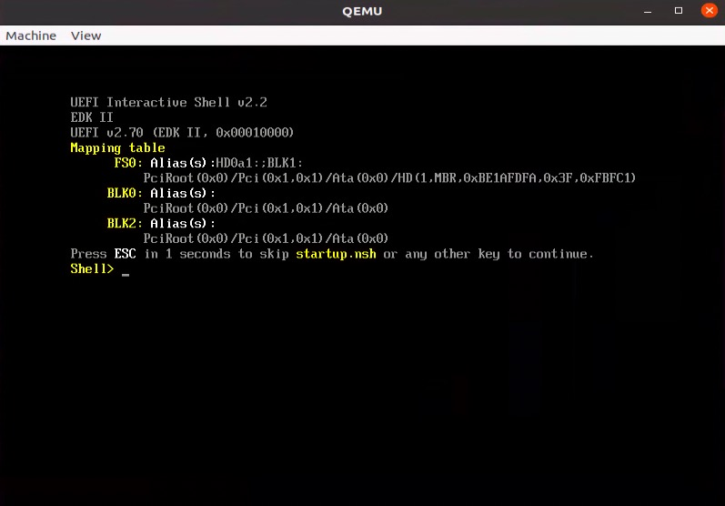
等待几秒钟，或者直接按其他任何按键，系统将进入 UEFI Shell。进入命令行界面后，我们输入 exit 。可以直接进入UEFI的图形配置界面。依次进入 "Device Manager"→"Secure Boot Configuration"→ "Secure Boot Mode" ，选择 Custom Mode
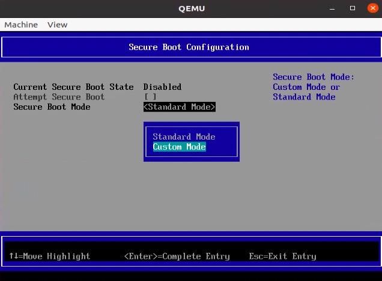
选择出现的“Custome Secure Boot Options”，我们将进入相关秘钥导入的界面
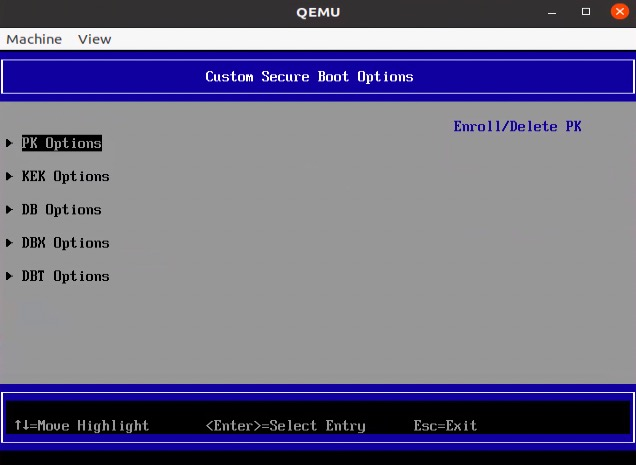
下面将以PK秘钥的导入为例，说明如何当如PK秘钥导入UEFI中。选择 “PK Options”，进入PK的导入界面
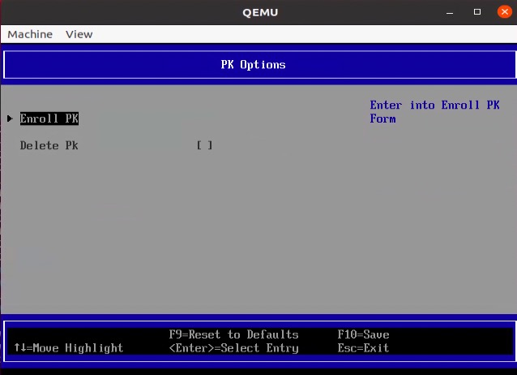
选择“Enroll PK”
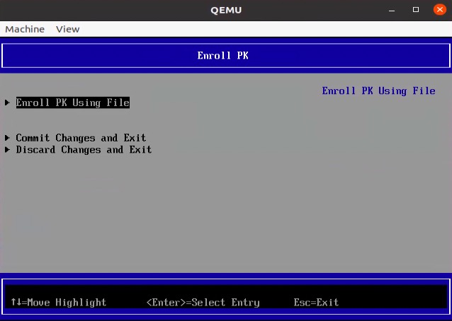
选择“Enroll PK Using File”
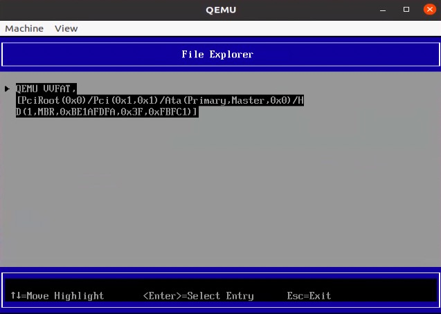
选择对应的文件，这里选择“PK.der”
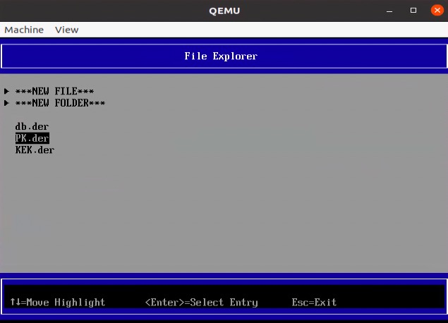
最后将文件提交到UEFI固件中
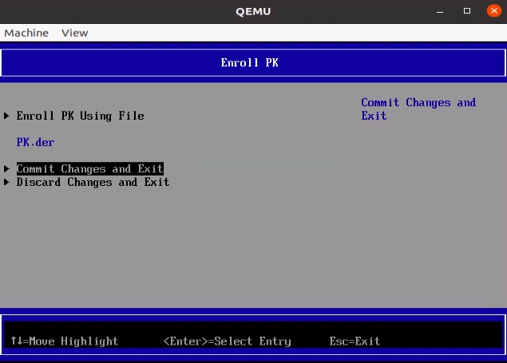
然后分别导入DB，PKE秘钥，退出到"Secure Boot Configuration"界面中，在这个界面中我们可以明确的看到安全启动项已经被打开了
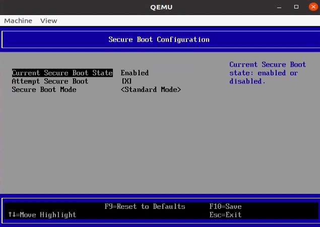
继续退出到主界面，选择“Continue”
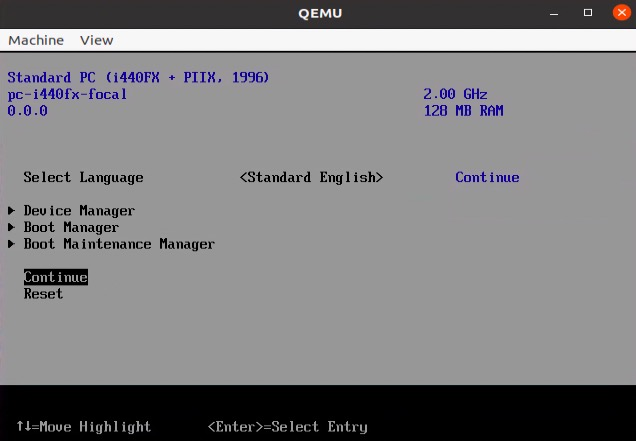
最后执行Enter键重启，我们就可以得到一个支持安全启动的UEFI固件
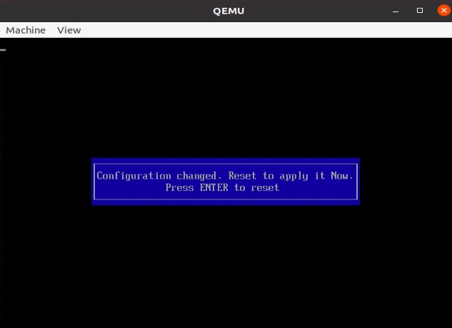
细心一点会发现，OVMF_CODE.fd这个文件没有变化，变化的是OVMF_VARS.fd文件，这个文件存储了UEFI中的变量项。在真实的计算机中，很多硬件商存放的是微软的DB，KEK证书，以及自己的PK证书。而在OVMF中默认没有这些信息，所以这里我们创建了自己的PK，DB，KEK秘钥。
回归正传，由于我们在编译shim的过程中让其自动签发了mmx64和fbx64所以，这里我们不需要签发了，但需要注意是shim的mok秘钥管理器中其实存放的是两个证书，一个是其自动生成的用于签发mmx64和fbx64的证书，还有一个是我们导入的shim证书。
将 shimx64.efi.signed，grubx64.efi.signed，mmx64.efi，fbx64.efi放到正确的位置
$ install -m 0644 shimx64.efi.signed EFI/test/shimx64.efi
$ install -m 0644 shimx64.efi.signed EFI/BOOT/BOOTX64.efi
$ install -m 0644 grubx64.efi.signed EFI/test/grubx64.efi
$ install -m 0644 mmx64.efi EFI/test/mmx64.efi
$ install -m 0644 mmx64.efi EFI/BOOT/mmx64.efi
$ install -m 0644 fbx64.efi EFI/BOOT/fbx64.efi然后，我们根据UEFI的配置创建一个BOOTX64.CSV文件，UEFI会默认通过这个文件找到正确的启动选项。
$ echo "shimx64.efi,test,,This is the boot entry for Test" | iconv -t UCS-2LE >BOOTX64.CSV
$ install -m 0644 BOOTX64.CSV EFI/test/BOOTX64.CSV到这里，和安全启动相关的配置基本已经完成，接着我们还需要配置grub的配置文件。
$ sudo blkid ${LOOPDEV}p3
/dev/loop1p3: LABEL="root" UUID="197e687e-b9b1-4d5b-8ff2-87e635d08801" TYPE="ext4" PARTLABEL="Linux root filesystem" PARTUUID="7e844aef-eb31-433c-9ae0-7330e17f601b"
cat <<GRUBCFG > grub.cfg
search.fs_uuid 197e687e-b9b1-4d5b-8ff2-87e635d08801 root hd0,gpt3
set prefix=(\$root)'/boot/grub'
configfile \$prefix/grub.cfg
GRUBCFG
$ cp grub.cfg EFI/test/读过之前文章的对这段估计这样陌生了，我们使用blkid找到第三个分区的UUID，作为grub的默认根文件系统。让grub从第三个分区找真实的grub配置文件，这个配置文件就是一个桥接的过程。
$ MOUNTDIR=$(mktemp -d -t workXXXXXX)
$ sudo mount /dev/loop1p3 $MOUNTDIR
$ cp $linux_kernl/arch/x86_64/boot/bzImage .
sbsign --key keys/shim.key --cert keys/shim.pem --output bzImage.signed bzImage
$ cp bzImage.signed $MOUNTDIR/boot/bzImage使用以上命令签发了linux内核镜像，在UEFI安全启动中，使用SHIM机制，需要将grub和内核，以及内核模块都要经过shim秘钥的签发。所以这里使用shim秘钥签发内核镜像，并将内核镜像拷贝到了第三个分区的/boot目录中。同时还需要更改第三个分区的grub.cfg配置文件，这个配置文件位于 /boot/grub/grub.cfg 中。将文件修改为以下内容。
set default="0"
set timeout="5"
menuentry "Buildroot" {
set root='hd0,gpt3'
linux /boot/bzImage root=/dev/sda3 rootwait console=tty1
}这个磁盘镜像使用了3个分区，第一个用于bios，其实没用，第二个用于uefi系统分区，第三个用于根文件系统，所以这里设置了第三个分区作为根文件系统。
将第三个分区卸载
$ sudo umount $MOUNTDIR接着，我们将第二个分区挂在到系统中，并且将制作的EFI文件拷贝到这个分区中。
sudo mount ${LOOPDEV}p2 $MOUNTDIR
sudo cp -R EFI $MOUNTDIR至此，我们完成了UEFI安全系统的磁盘镜像。
验证
使用以下命令，支持UEFI安全启动的uefi磁盘能够启动成功
$ sudo qemu-system-x86_64 \
-drive if=pflash,format=raw,readonly,file=./OVMF_CODE.fd \
-drive if=pflash,format=raw,file=./OVMF_VARS.fd \
-drive file=./bios-uefi.img,format=raw -m 512 \
-net none -serial file:serial.log使用以下命令验证关闭UEFI安全启动的这个磁盘能否启动成功，OVMF.fd这个文件直接从编译的结果获取，没有打开安全启动
$ sudo qemu-system-x86_64 \
-bios OVMF.fd \
-drive file=./bios-uefi.img,format=raw -m 512 \
-net none -serial file:serial.log使用以下命令验证bios方式的这个磁盘能否启动成功
$ sudo qemu-system-x86_64 \
-drive file=./bios-uefi.img,format=raw -m 512正常情况下，以上3三种情况都可以正常启动。